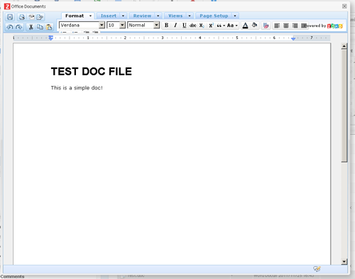

This editors will enable online edition of various office-like documents : MSWord/Powerpoint/Excel and their open-source counterparts (OpenOffice..). This is using the Zoho webservice, and requires a Zoho APi key to work. Go to http://zapi.zoho.com and register for an API Key. The first 3000 docs in the month are free, afterwards you'll have to switch to a paid version. Once you have your zoho api key, report in the plugin configuration the API Key provided on your zoho account and the plugin will be active.
This plugin is using a specific webservice that needs to post back the modified file to your Pydio installation.
It requires the php openssl extension, as the post to the zoho server is done via HTTPS.
Also, please make sure to copy and paste your generated PUBLIC KEY inside the file plugins/editor.zoho/agent/save_zoho.php file, otherwise it WILL NOT WORK.
- If your installation is online, you should have nothing specific to do, except verifying the folder editor.zoho/agent/files is not accessible for listing by the webserver (an htaccess with "deny for all" is already present in it for Apache). This is the "buffer" folder where the files will be stored after being posted back by Zoho and before being updated in the original file.
- If your installation is local or behind a firewall, and zoho is not able to access it via internet, you will need to place the "agent" in some public/accessible place on a different server, and provide the information in the plugin configuration (use z-agent "yes", and agent url "full path to the agent php script"). That way, zoho will post back to this accessible server, and Pydio will retrieve the posted files when the editor is closed.
- If you have no way to put this agent in an accessible place, this plugin will not work!
